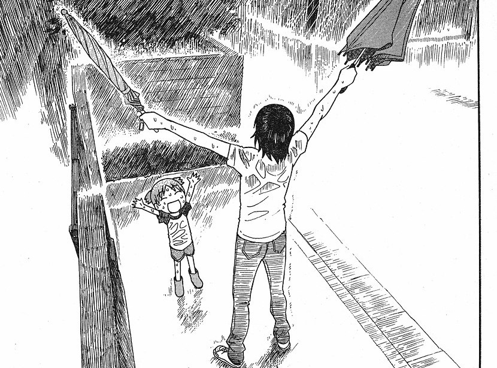

3 UTS-3: My Stories for You
Today Is Always Your Best Day 🍀
3.1 Membuka ‘Quest Log’ Inspirasi
Sebagai seorang player di ‘Level 3’ (Tingkat 3), saya sadar hidup ini seperti memainkan two game modes sekaligus.
Dan saya ingin membagikan dua “Game Guide” atau “Walkthrough” yang menurut saya paling inspiratif untuk kita mainkan.
Mode #1: JRPG Kompleks tentang Masa Depan. Mode #2: Slice-of-Life Minigame tentang Hari Ini.
3.2 Game Guide #1: ‘Persona 4’ (The Main Quest)
Seperti yang pernah saya ceritakan, Persona 4 adalah ‘Game of My Life’.
Ini adalah game yang sempurna untuk ‘Level 3’ kita. Ini adalah JRPG yang gameplay-nya adalah tentang:
* Berjalan menembus ‘Fog of War’ (Kabut ketidakpastian masa depan).
* Melawan ‘Shadow Self’ (Si ‘Overthinking’, si ‘Imposter Syndrome’, si ‘Tired Student’).
* Dan satu-satunya cara untuk menang adalah dengan menaikkan stats ‘Social Links’ (Ikatan dengan orang lain).
3.3 ‘Persona 4’: Lore & Wawasan
Kisah Inspiratif #1: “Kita tidak bisa lari dari ‘Shadow’ kita.”
Game ini mengajarkan saya bahwa semua ‘Overthinking’ dan ‘Kecemasan’ (Shadow Self) itu tidak bisa dikalahkan sendirian.
Satu-satunya cara untuk ‘menang’ dalam quest ‘Menjadi Dewasa’ adalah dengan “Reaching Out to the Truth”—mempercayai ‘Party Members’ kita (teman-teman, relasi intim) untuk menghadapi kabut bersama.
Ini adalah game guide tentang MENGAPA kita berjuang: Demi ikatan dan masa depan.
3.4 Game Guide #2: ‘Yotsuba&!’ (The Daily Quest)
Tapi, ada ‘game guide’ kedua yang sama pentingnya. Ini bukan JRPG yang berat. Ini adalah manga.
Manga ini tidak punya ‘Main Quest’ yang rumit. Tidak ada ‘Shadow Self’. Tidak ada ‘Fog of War’.
Boss-nya adalah “Hari Hujan”.
Quest-nya adalah “Pergi Membeli Susu”.
Stats-nya hanya satu: ‘ENJOY EVERYTHING’ (Menikmati Segalanya), dan Yotsuba (tokoh utamanya) punya stat ini di level MAX.

3.5 ‘Yotsuba&!’: Lore & Wawasan
Kisah Inspiratif #2: “Semua hal adalah ‘Play’.”
Game ini mengajarkan saya sesuatu yang dilupakan oleh Persona 4: Yotsuba mengubah game loop yang paling membosankan (‘the grind’) menjadi gameplay yang paling seru.
Dia menemukan ‘fun’ dalam daily quest yang kita anggap remeh: mencoba AC baru, menangkap serangga, atau sekadar makan es krim.
Ini adalah game guide tentang BAGAIMANA kita harus menjalani perjuangan itu: Dengan menemukan kebahagiaan di level paling dasar.

3.6 More Resources You Can Watch
3.7 Pesan Terakhir: ‘The Co-op Strategy’
Ini adalah kisah yang ingin saya bagikan kepada Anda.
Kita sering kali terlalu fokus memainkan ‘Game #1’ (Persona 4). Kita terjebak dalam quest ‘Menjadi Dewasa’, menaikkan stats ‘Karir’, dan overthinking soal ‘Kabut Masa Depan’.
Kita lupa bahwa kita juga harus memainkan ‘Game #2’ (Yotsuba&!).
Kisah inspiratifnya adalah: Kita butuh ‘Main Quest’ Persona 4 untuk memberi kita tujuan dan ikatan. Tapi kita butuh ‘Daily Quest’ Yotsuba untuk memberi kita kebahagiaan hari ini.
Jangan lupa menikmati gameplay sederhana di tengah grinding ‘Level 3’ yang berat ini.